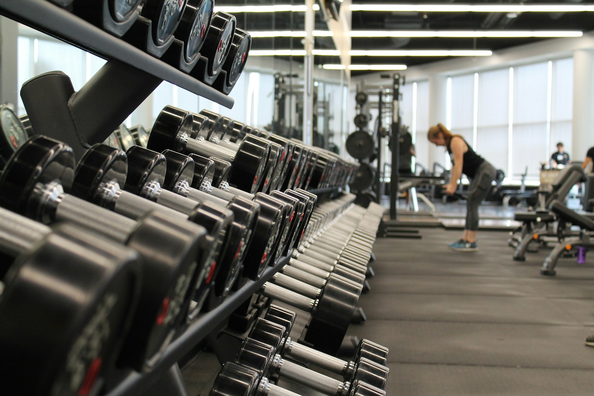

Qadam Fit
Топтық жаттығулар

Апталық кесте
Кесте үлгі ретінде берілген. Уақыт UTC+5 бойынша көрсетілген.
-
Дүйсенбі
Қимыл еркіндігі
Буындардың қозғалғыштығы және қимылды бақылау.
35 мин · Кез келген деңгей
-
Сәрсенбі
Функционалды жаттығу
Күш пен төзімділікті дамытуға арналған жаттығулар.
45 мин · Орта деңгей
-
Жұма
Арқа саулығы
Қимыл еркіндігі мен дене қалпына арналған жеңіл жаттығу.
40 мин · Кез келген деңгей
-
Сенбі
Функционалды жаттығу
Күш пен төзімділікті дамытуға арналған жаттығулар.
45 мин · Орта деңгей
-
Сенбі
Қимыл еркіндігі
Буындардың қозғалғыштығы және қимылды бақылау.
35 мин · Кез келген деңгей